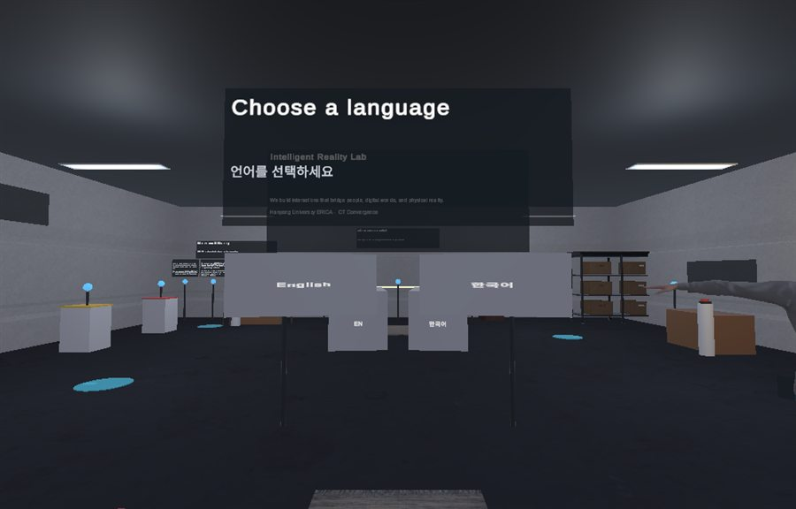
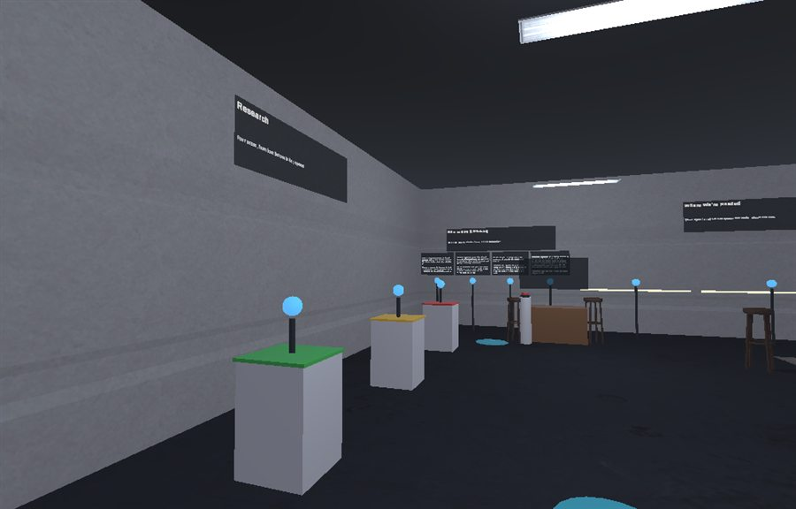
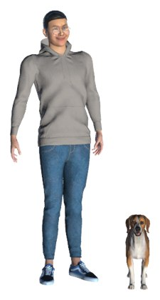

Teaching · 3D User Interfaces, Fall 2026
Build your own interactive WebXR space. 웹과 XR에서 모두 열리는 3D 공간을 직접 설계하고 구현합니다.
What is required of you depends on how many of you there are. Start by walking the example space below, then read the requirements for your team size.
요구사항은 팀 인원에 따라 다릅니다. 먼저 아래 예시 공간을 직접 둘러보고, 해당하는 인원의 요구사항을 확인하세요.
This lab's virtual space is built on the same template you get.
Open it, walk it, and read it as a design rather than as a demo. Most of what the requirements ask for is visible somewhere in it, so going and finding each one is the fastest way to see what is being asked. It is an example, not a model answer — yours does not have to look like it.
이 연구실의 가상 공간은 여러분이 받는 템플릿으로 만들었습니다. 데모가 아니라 설계로 읽어 보세요. 요구사항에서 말하는 것들을 대부분 그 공간 안에서 볼 수 있으니, 직접 하나씩 찾아보는 것이 요구사항을 이해하는 가장 빠른 방법입니다. 다만 이것은 모범 답안이 아니라 하나의 예시입니다. 여러분의 공간이 이것을 닮을 필요는 없습니다.



| Requirement | Solo | Pair | Trio |
|---|---|---|---|
| Interactive objects | 3 | 5 | 8 |
| Spatial UI panels | 2 | 3 | 4 |
| Viewpoints | 2 | 3 | 4 |
| Zones | 1, clearly arranged | 2–3 | 3–4 |
| Visitor flow | within one room | between zones | wayfinding across zones |
| Signature interaction | 1 | 1 | 1 main + 1 secondary, in a different zone |
| Transition rationale | — | — | 1 page |
The numbers are minimums, not targets. 위 숫자는 목표치가 아니라 최소 기준입니다.
You are marked on depth, not breadth. One room where every object answers scores above a larger space that is half furnished.
혼자 할 때 주의할 점. 넓이가 아니라 깊이로 평가합니다. 모든 것이 제대로 반응하는 방 하나가, 절반만 채운 넓은 공간보다 높은 점수를 받습니다.
Both of you will be asked about both. Split by area instead — one takes navigation and layout, one takes interaction and feedback — and review each other's work.
둘이 할 때 나누는 법. ‘기획’과 ‘개발’로 나누지 마세요. 두 사람 모두 양쪽을 질문받습니다. 대신 영역으로 나누고 — 한 명은 이동과 배치, 한 명은 상호작용과 피드백 — 서로의 작업을 검토하세요.
Why does a visitor move on to the next zone, and what carries over when they do? The extra scope is judged on this, not on extra furniture.
셋이 할 때 더 내는 것. 구역과 구역 사이의 전환을 왜 그렇게 설계했는지 1쪽으로 씁니다. 방문자가 다음 구역으로 넘어가는 이유는 무엇이고, 넘어갈 때 무엇이 이어지는지 답해야 합니다.